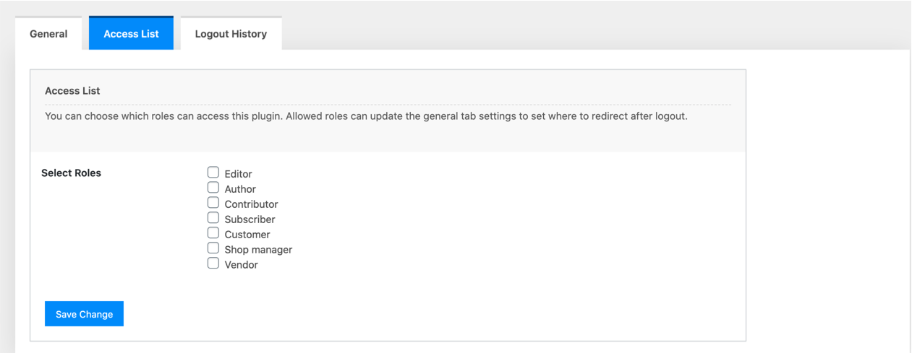
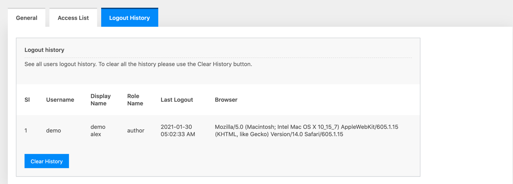

There could be a lot of users on our WordPress-based website. They can be authors, subscribers, editors, or else. For some reason when they logout from their dashboard we might need to redirect them to our desire location. By default when users log out they redirect to the WordPress login page again.
But what happened If want to redirect them to any other location? Well, Using the WP Logout Location plugin will help you to do that. You can easily redirect any WordPress user to your desired location.
The plugin is located under settings tab.
There are 3 tabs in ths plugn wich are
In this general tab, you can find an option to choose a role type. There are 2 roles are available which are:

If you choose Any Roles then it will show an option that where you want to redirect all of your WordPress roles.
If you choose Multiple Roles then it will show a list of your WordPress roles along with different options. Here you can individually choose which role will redirect to which location.
Currently, there are 7 options that you can choose to redirect. Which are below:
Page - If you choose a page it will show all available pages from your WordPress site.
Custom Link - If you a choose custom link then it will show you an input box where you need to provide the custom link.
Post - If you choose a post all of your posts will be shown there. Please note that this post will only show WordPress default posts.
Custom Post - If you choose a custom post then you can choose a list of all custom post registered in your WordPress website.
Product (WooCommerce) - If you choose Product (WooCommerce) and if the WooCommerce plugin is installed then this option will show you all the product list.
User page - If you choose User then all of your site user will be shown there.
Category - If you choose category then all of your including custom post category will be shown there.
Tag - If you choose tag then all of your registered tag will be shown on this list.
This plugin has an option to choose who can use this plugin by going to Accesslist tab. This accesslist tab will show all of your WordPress roles. You can choose anyone of them or multiple one.
Every user logout from your WordPress website will be stored. You can view all of your logout history from the Logout History tab. Anytime you can clear all the history.
